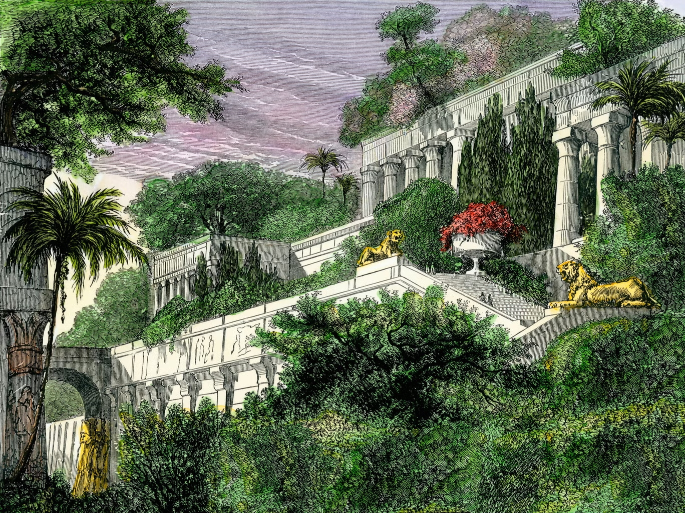

Наша цель
Вся команда Babylon's legacy старается сделать мир лучше, популяризируя удивительные блюда со всех уголков мира. Наш сайт ищет уникальные рецепты со всего мира.
Пускай и ваш рецепт станет частью истории!

Кто мы?
Babylon's legacy — это невообразимо огромный и удивительный мир, полный рецептов стран и народов мира. От далеких земель Азии до холодных вод Атлантики, от загадочных теплых морей Индии до саванн Африки мы собрали для вас рецепты стран народов мира.
Выбор Страны
Выберите рецепты какой страны вы бы хотели увидеть.